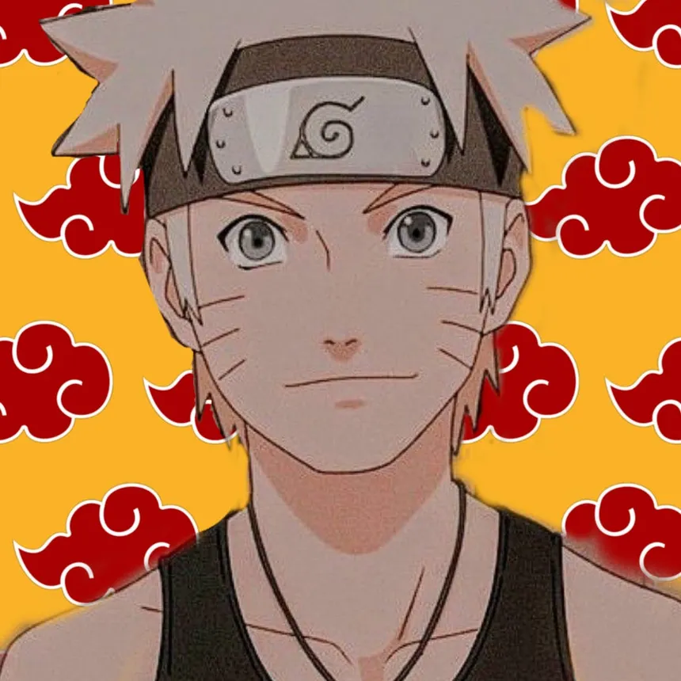
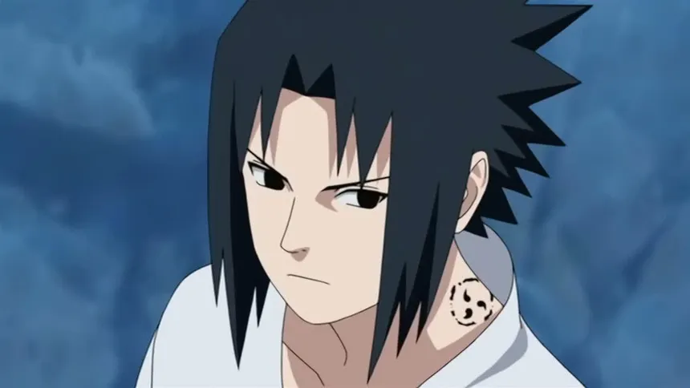
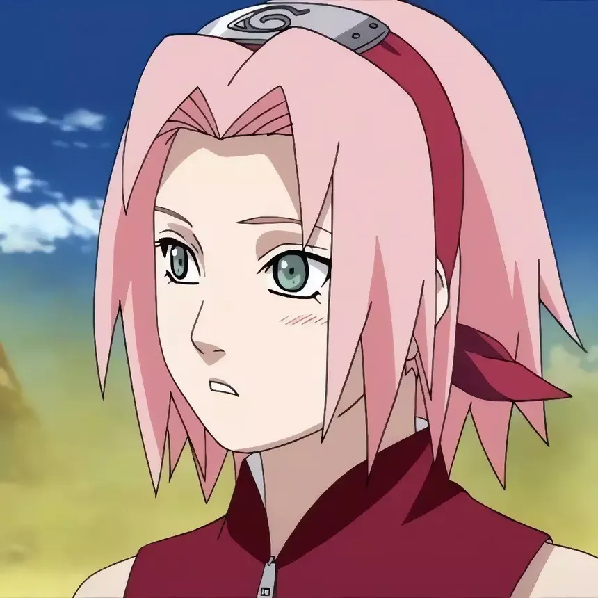
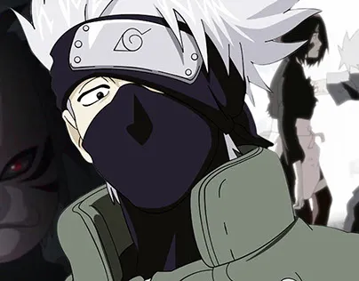

About Naruto
Naruto is a Japanese manga series written and illustrated by Masashi Kishimoto. It tells the story of Naruto Uzumaki, a young, socially isolated ninja who seeks recognition from his peers and dreams of becoming the Hokage, the leader of his village. The story is told in two parts: the first is set in Naruto's pre-teen years (volumes 1–27), and the second in his teens (volumes 28–72). The series is based on two one-shot manga by Kishimoto: Karakuri (1995), which earned Kishimoto an honorable mention in Shueisha's monthly Hop Step Award the following year, and Naruto (1997).
Naruto was serialized in Shueisha's shōnen manga magazine Weekly Shōnen Jump from September 1999 to November 2014, with its 700 chapters collected in 72 tankōbon volumes. Viz Media licensed the manga for North American production and serialized Naruto in their digital Weekly Shonen Jump magazine. The manga was adapted into two anime television series by Pierrot and Aniplex, which ran from October 2002 to March 2017 on TV Tokyo. Pierrot also produced 11 animated films and 12 original video animations (OVAs). The franchise additionally includes light novels, video games, and trading cards. The story continues in Boruto, where Naruto's son Boruto Uzumaki creates his own ninja path as opposed to following his father's.
Naruto is one of the best-selling manga series of all time, having 250 million copies in circulation worldwide. It has become one of Viz Media's best-selling manga series; their English translations of the volumes have appeared on USA Today and The New York Times's bestseller list several times, and the seventh volume won a Quill Award in 2006. Naruto has been praised for its character development, storylines, and action sequences, though some felt the latter slowed the story down. Critics noted that the manga, which contains coming-of-age themes, often incorporates cultural references to Japanese mythology and Confucianism.

NARUTO
The Main Character
Naruto Uzumaki is the main protagonist of the series. He is a young ninja from the Hidden Leaf Village who dreams of becoming the Hokage, the leader of his village.
Team of Naruto [Team-7]

Sasuke Uchiha
Sasuke Uchiha is a member of Team 7 and one of Naruto's closest friends. He is a skilled ninja with a tragic past, seeking revenge against his older brother Itachi Uchiha for the massacre of their clan.

Sakura Haruno
Sakura Haruno is a medical ninja from the Hidden Leaf Village and a member of Team 7. She is known for her exceptional medical skills and her dedication to her teammates.

Kakashi Hatake
Kakashi Hatake is a Jonin of Konohagakure and the primary leader of Team 7, serving as the sensei to Naruto Uzumaki, Sasuke Uchiha, and Sakura Haruno. Famed as the "Copy Ninja" due to his possession of the Sharingan (originally gifted by his dying teammate Obito Uchiha), Kakashi is renowned for copying over a thousand jutsu and inventing the Chidori technique.